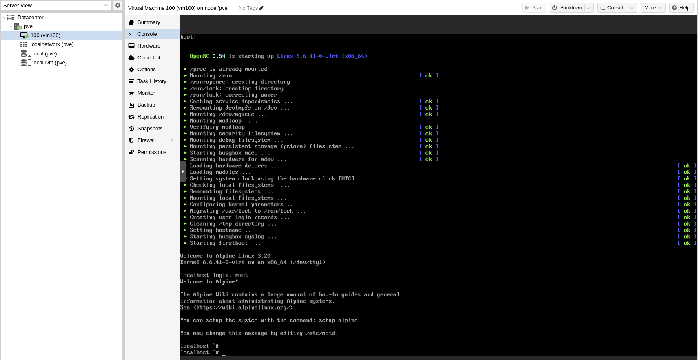
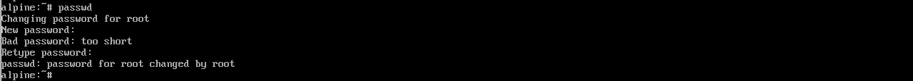

Como de momento o teclado non está configurado na VM, para escribir o guión terás que premer a tecla que está situada á dereita do 0 (é a tecla usada para o guión nos teclados americanos). Se ao premer esa tecla no teu teclado non aparece o guión, terás que probar con outras.
IMPORTANTE: se por algún motivo tiveras que interromper a instalación, podes facelo pulsando Ctrl+C e volver iniciala desde este paso.

Na disposición (layout) escribe es.

Na variante depende do teclado que teñas (p.e. es-winkeys para un teclado con teclas Windows, es-mac para un teclado Mac). En caso de dúbida escribe de novo es.

Acepta (sen escribir nada) para configurar a interface eth0 que é a opción por defecto. Esta interface correspóndese co único adaptador virtual de rede que ten a VM.

Neste caso non podemos usar DHCP para asignar unha configuración de rede automaticamente porque non temos un servizo DHCP configurado no servidor Proxmox. Vamos asignar manualmente os valores da configuración de rede. Cubre os seguintes datos a medida que se che vaian pedindo:
- Enderezo IP: 10.10.10.100/24
- Gateway: 10.10.10.2

Escribe n (ou acepta sen escribir nada) para indicar que non queremos facer máis configuracións manuais da rede.

Escribe icap para o nome de dominio DNS e a IP do servidor de nomes que proporciona Virtualbox xa preconfigurado na interface NAT: 10.0.2.3.

IMPORTANTE: non uses caracteres "raros" para o contrasinal, porque vamos ter que usalo nalgunha ocasión co teclado sen configurar. Se usas o guión lembra que cando o teclado non estea configurado terás que premer a tecla que está situada á dereita do 0.


Para elo terás que comprobar na páxina: https://mirrors.alpinelinux.org se algún dos repositorios da listaxe que se che mostra está actualizado para a versión 3.16 de Alpine. Tes que procurar un repositorio dos da listaxe que estea en estado OK na columna v3.16, igual que se ve no exemplo para o repositorio mirror.mangohost.net.

Escribe o número que o repositorio ten na listaxe para escollelo (no exemplo o repositorio mirror.mangohost.net ten o número 69 na listaxe).

IMPORTANTE: non uses caracteres "raros" para o contrasinal, porque vamos ter que usalo nalgunha ocasión co teclado sen configurar. Se usas o guión lembra que cando o teclado non estea configurado terás que premer a tecla que está situada á dereita do 0.

IMPORTANTE: asegúrate de que se configura correctamente o usuario (que non aparece ningunha mensaxe de erro e que aparecen as que indican que se instalaron correctamente o doas e o busybox). Se non fora así terás que interromper a instalación pulsando Ctrl+C e volver comezar desde o paso 3.

Escribe sda para usar o único disco ríxido que temos na VM. No tipo de instalación escribe sys para realizar unha instalación estándar.

O instalador procederá a realizar o particionamento do disco.